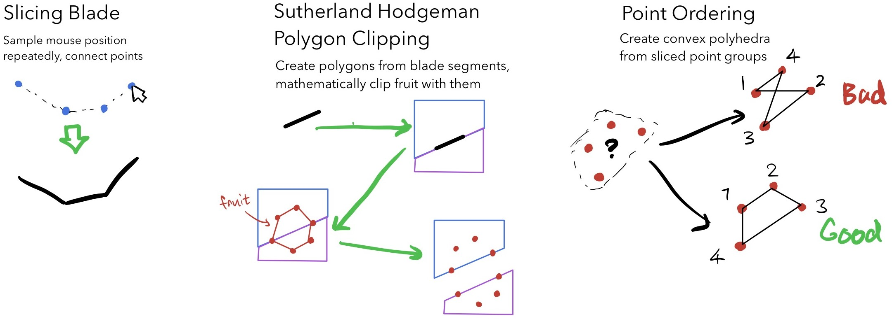
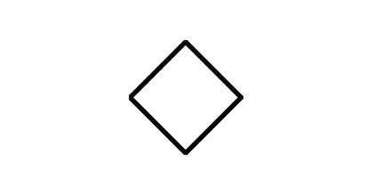
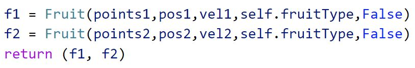

Fruit Slicer was created by 3 friends and me over the course of a 24-hour weekend Python hackathon. The concept that we settled on was a fruit-slashing game like the mobile game Fruit Ninja, but with accurate geometrical fragment slicing. A key bit of fun is that the slicing is recursive, so you can slice a fruit into fragments, and split those fragments, and split the fragments of those fragments, on and on infinitely many times.
A month after the hackathon, I independently developed an OpenCV-based motion input controlled version of the game on a fork, available here, which I originally built to unit test Beat Slicer's camera control.
ProcessWe divided up the tasks to make the most of our limited hackathon time, which was especially suitable to our OOP-based game. Fruits, we decided, would be low-poly shapes with no more than a dozen edges for simplicity, and together we figured out the polyhedron slicing process:
Moving the halves apart was fairly simple; give each fragment a push, perpendicular to the slice direction's slope. This did result in some weird behavior with perfectly vertical slices, as they would result in a divide by zero. We were pretty tight on time, so we hardcoded a catch for this edge case, and to our knowledge, nobody was able to make an exact pixel-perfect vertical cut. Next, we translated the math into actual methods in code. After several hours of debugging, we had a reliable slicing demo.
We began this project with just the idea of polyhedral slicing, so I started writing code for a "fruit fragment" object. Understandably, the code for movement and drawing a fragment was very similar to that of a whole fruit, and we realized: what if a sliced fruit simply created two more "fruit" objects instead?
The fragments thus could be sliced just like the whole fruits, and this gave us the fantastically fun ability to turn fruit into little shreds of confetti.